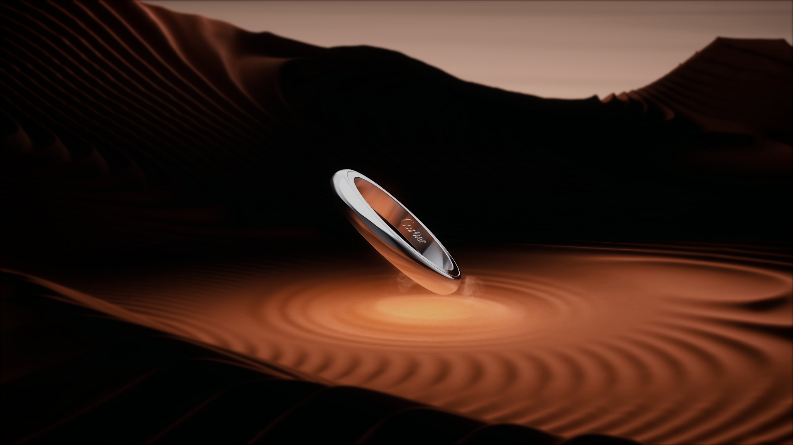

Project
Cartier — White Gold
Self-initiated study of premium product forms and photoreal presentation. Cartier ring used as a visual benchmark.

Personal, non-commercial work. Not affiliated with, endorsed by, or commissioned by Cartier.
Project
Self-initiated study of premium product forms and photoreal presentation. Cartier ring used as a visual benchmark.

Personal, non-commercial work. Not affiliated with, endorsed by, or commissioned by Cartier.